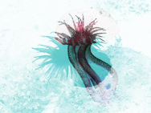

Los invertebrados constituyen un grupo de animales muy heterogéneo. ¿Qué características tienen en común todos ellos? Indica y explica el tipo de simetría de estos invertebrados.
Justifica que los invertebrados son organismos eucariotas.
Razonar cuál de estos animales no es invertebrado.
Investiga y elabora un cuadro sobre los métodos de alimentación de los invertebrados.
¿Qué actividades entre las esponjas y los cnidarios?
¿Qué función cumplen partículas de alimento y oxígeno, en los invertebrados?
¿Qué relación existe entre el esqueleto blando y los férreos?
¿Qué tipos de simetría presentan los invertebrados?
Presenta las animales de la actividad anterior, tu caso, indica grupo al que pertenece cada uno y sus características.
¿Qué características tienen los moluscos?
¿Qué características tienen los artrópodos?
¿Qué características tienen los equinodermos?
¿Qué características tienen los anélidos?
¿Qué características tienen los cnidarios?
¿Qué características tienen los poríferos?
Imágenes de invertebrados

Medusa vibranteAnémona de mar coloridaOruga colorida sobre hojaArrecife de coral vibranteEscorpión en superficie de maderaGusano marino